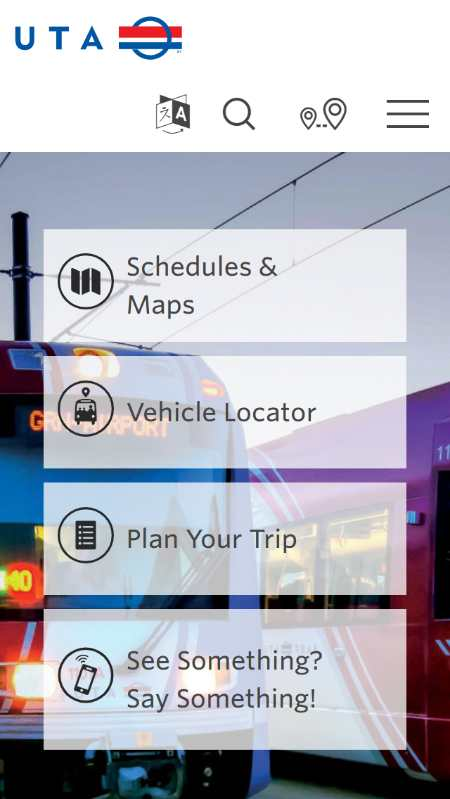
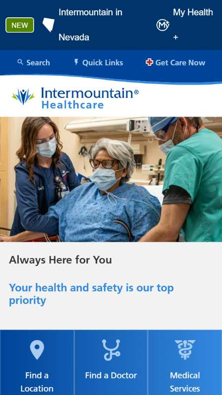
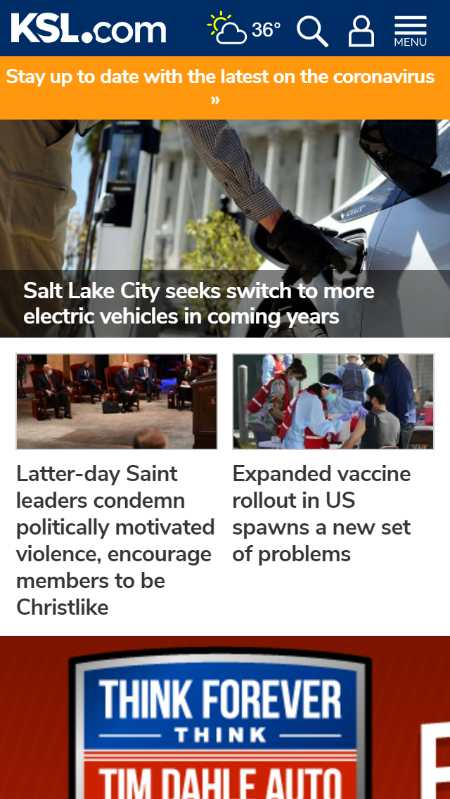

Fitt's Law
UTA
Fitt's Law describes the time it takes for a user to clickor touch a link. A user, who has a hard time clicking on or touching a link, will likely move on to another page. UTA has made the link area easy for atouch to move forward on the next page of information. The link box has both anicon and text to describe the selection choice.
White Space
Intermountain Health Care
White space, also called negative space, is used in designto lend an open feeling to the page. White space allows for easier reading ofthe page and allows for an object to become the focal point on the page. TheIntermountain Health Care page has white space effectively. There is no crowdingand the groupings let the eye travel from group to group.
Contrast
KSL
Contrast the opposites in elements. This can be color,shapes, sizes, textures, etc. Contrast can be eye-catching or making textreadable. KSL is using contrast to be eye-catching with the orange bar andallowing text to be readable over an image.